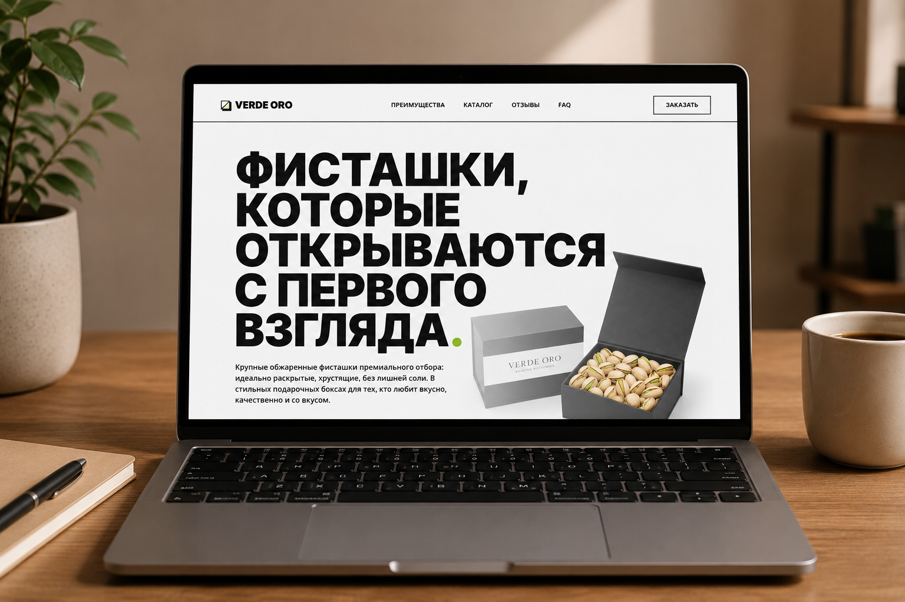
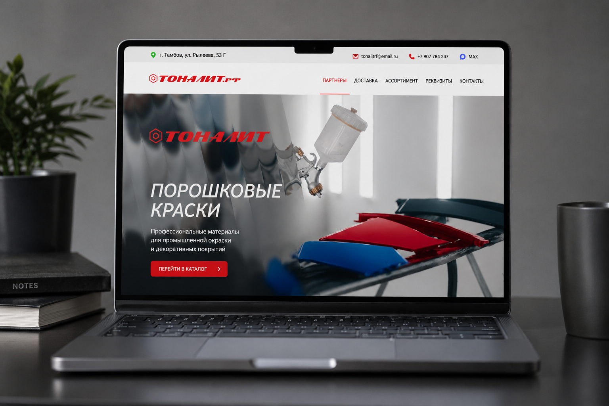
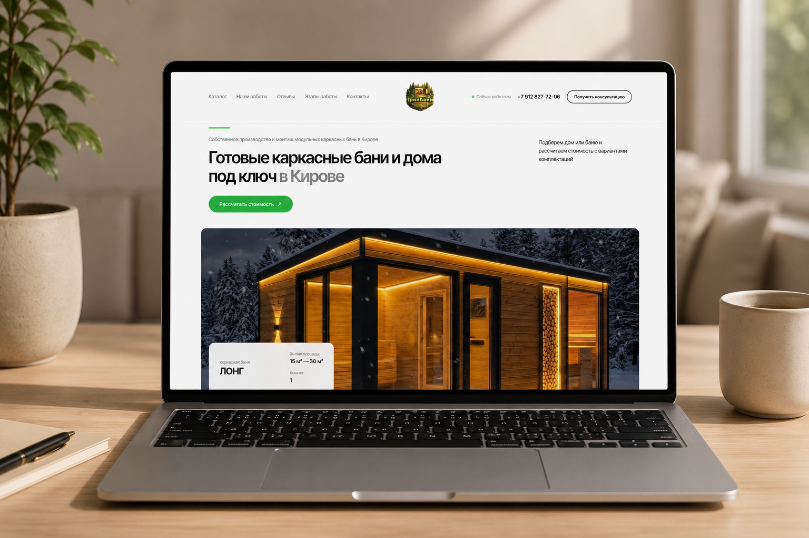
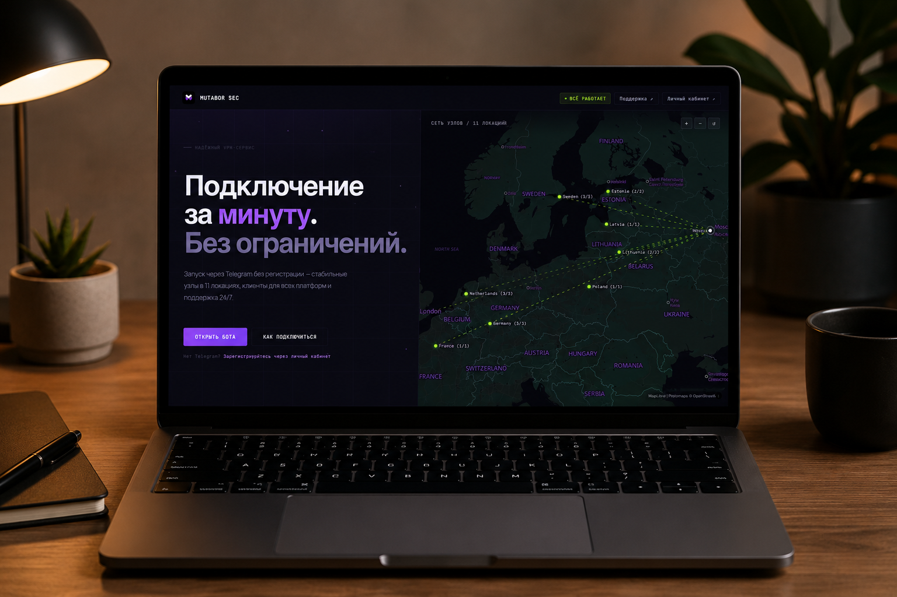
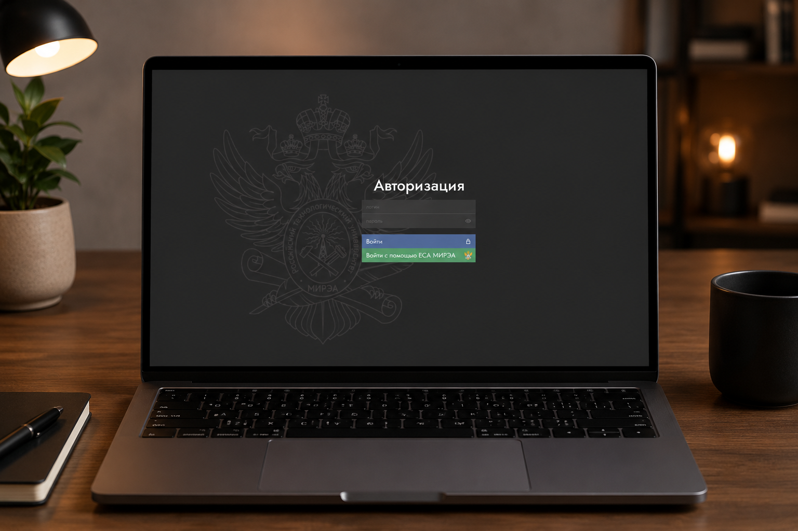
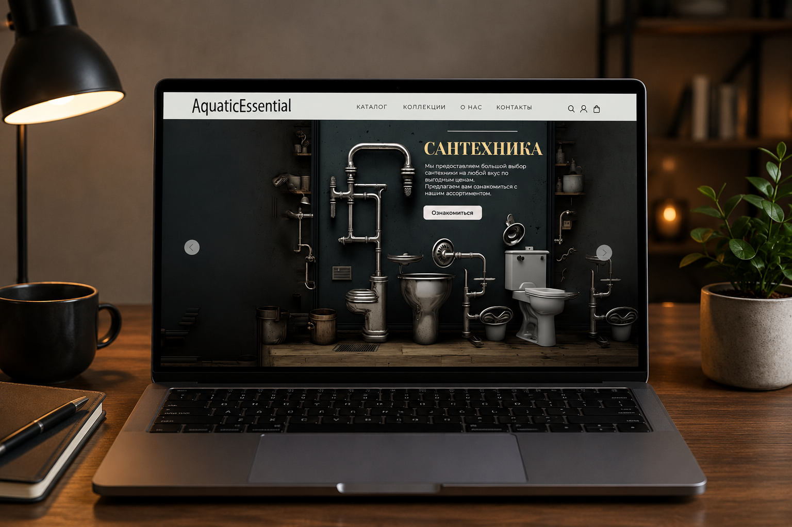
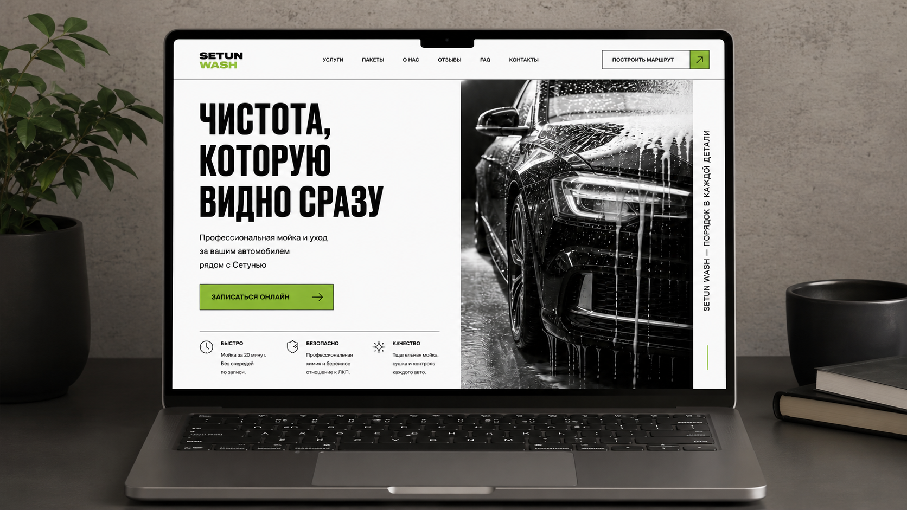
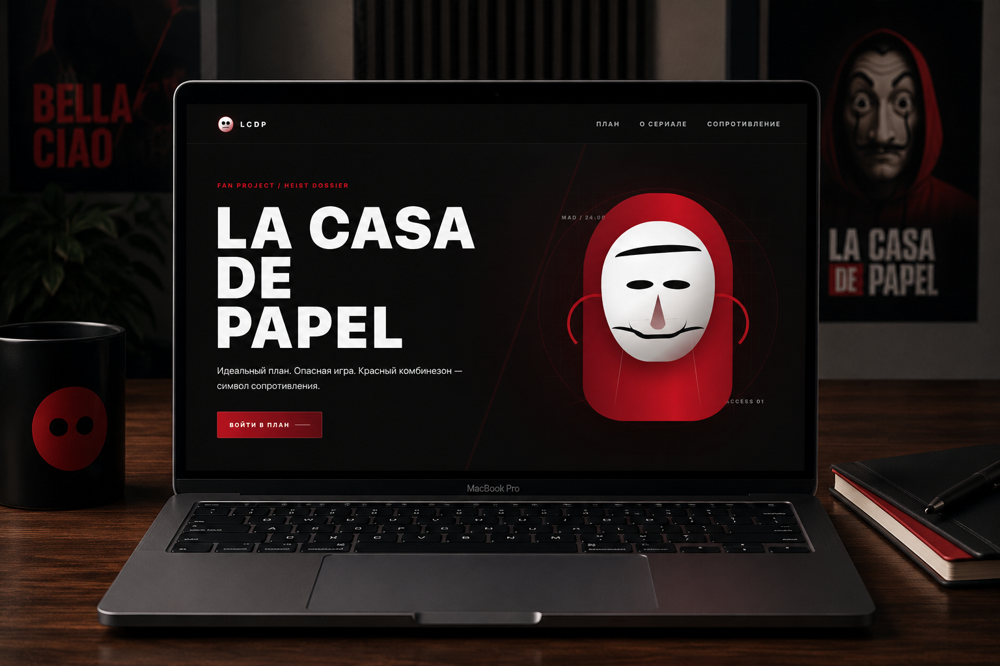

Лендинги
Продающие страницы для заявок, услуг, товаров и личных проектов.
01
Основные направления работы собраны по категориям. Полный список кворков, примеры и условия можно посмотреть на KWORK.
Продающие страницы для заявок, услуг, товаров и личных проектов.
Адаптивные блоки и страницы по Figma, макету или готовому примеру.
Боты для записи, приема заявок, уведомлений, админки и базы данных.
Скрипты под задачу: автоматизация, API, файлы и рабочие процессы.
Сбор данных с сайтов, каталогов и товаров с выгрузкой в удобный формат.
Сайты с frontend и backend: интерфейс, логика, формы и интеграции.
02
Подборка визуальных концептов и лендингов: от светлых продуктовых страниц до темных интерфейсов и атмосферных промо.

Verde Oro продуктовый лендинг
Тоналит каталог материалов
Бани и дома строительный лендинг
Mutaborg SEC темный SaaS-интерфейс
Авторизация служебный экран
AquaticEssential e-commerce концепт
Setun Wash сервисный лендинг
La Casa de Papel промо-концепт03
Отзывы с KWORK по завершенным заказам. Здесь оставлены только реальные формулировки клиентов без цен и лишней площадочной обвязки.
Исполнитель с вёрсткой лендинга справился отлично. Учёл все пожелания, даже те, что забыли сразу написать в задании.#014
Очень ответственный и главное что понимает быстро поставленные задачи, сделано все очень качественно и быстро. Учел все правки и был на связи все время.#028